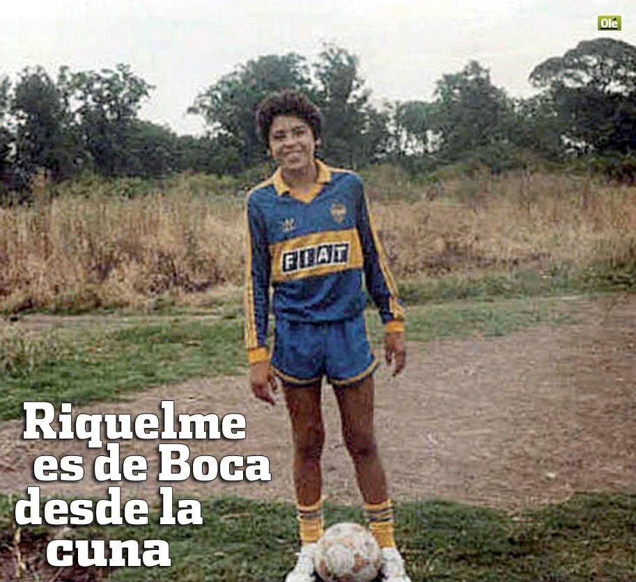
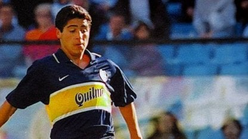
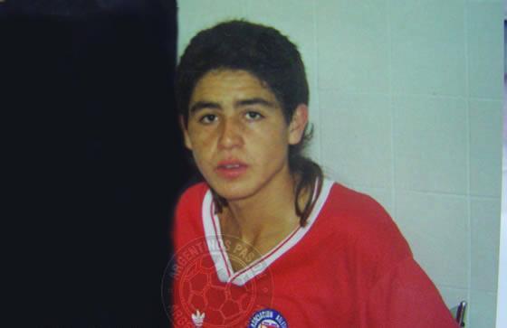
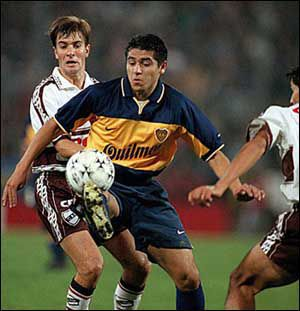
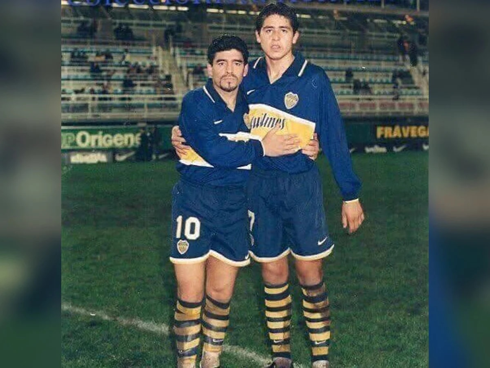
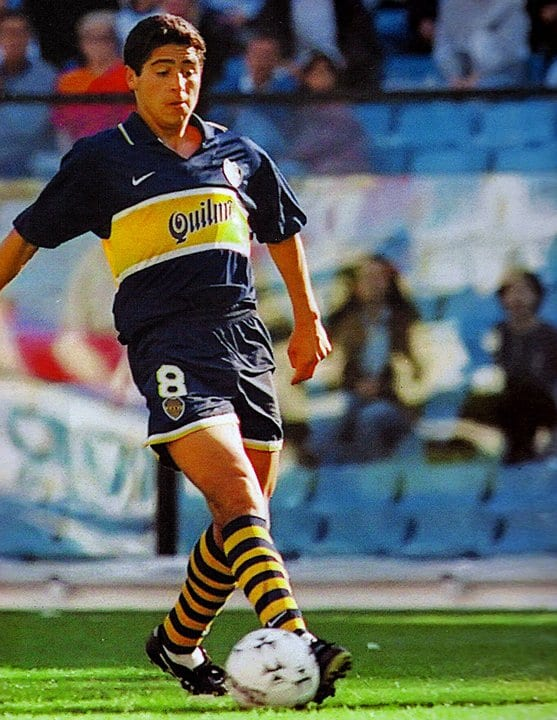
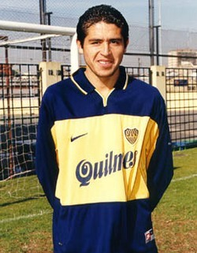

El Torero
Juan Román Riquelme nació en la ciudad de San Fernando de la Buena Vista, en la provincia de Buenos Aires, el 24 de junio de 1978. Comenzó a jugar al futbol infantil para luego ser formado en las inferiores de Argentinos Juniors como mediocentro.

Riquelme destacó por su destreza en el campo y firmó con la división U20 del Boca Juniors a sus 18 años. Ese verano también formó parte de la Sub-20 argentina, con quien en 1997 ganaría la Copa del Mundo FIFA U20.
  


